|
|
|
Тальцинский на Первомай 2007
- закрытие зимнего сезона - 28-29 апреля - 30 апреля - 1 Мая + Клюква - еще фоты День катания, тут все просто и понятно. Надо встать пораньше,
часов в 6-7, и не завтракая двинуть вверх, на гору. А там кататься до
темноты, изредка заезжая в лагерь перекусить... Ага, как же, просто,
ага.. Вот сейчас этот дождь, или чего там по палатке барабанит, кончится
и проснемся. Где-то опять играет веселая мелодия на мобиле, дайте переписать,
хочу просыпаться под такую :) О, клещ в боку торчит, какой шустрый - из леса догнал! Ладно, вылезаем! Со вчерашнего катания
мокрые носки и ботинки. Пасмурно, блин, придется позавтракать. Мееедленно
собираемся, мееедленно выходим на тропу, мееедленно поднимаемся. И,
о чудо! "Солнце, свети нам! Солнце, свети всегда!" 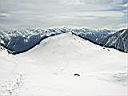 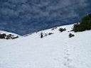 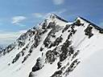 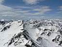 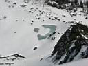 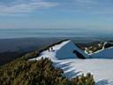 Эх, надо было пораньше выходить, теперь придется раздеваться по пояс, а то и до трусов :) Солнце только начинает жечь, впереди весь день! Похоже, кто-то вчера грамотно бурханил. Те, кого не страшат лавины и прочие ураганы, берут курс на Хот-Дог и на сам пик Тальцинский, с него можно выкатить прямо к протаявшему озеру. Те, у кого семеро по лавкам или кто обещал маме кататься осторожно - катаются с Шаман-горы или с гребня :) 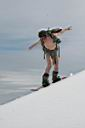 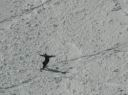 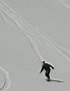 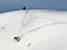 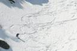 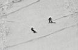 Идешь на верх или едешь от туда - все пути ведут на Шаман-гору. Там сегодня - горный пляж! Здесь тебя искупают в снегу, намажут кремом, дадут выпить, закусить, поговорить и сфотографировать :) плюс по желанию покурить и походить босиком. И хотя нет в мире совершенства - кожа на солнце сгорает быстро, а носки сохнут медленно - это никого уже не волнует :) 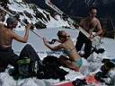 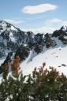 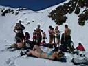 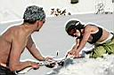 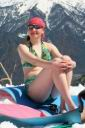 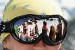 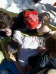 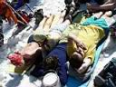 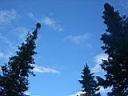 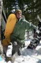 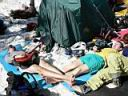 Из вечерних дел, кроме традиционного веселья выпивших сноубордистов и горнолыжников, стоит отметить: конкурс на лучшее название палаточного городка - победил Костя Шишкин, теперь он мэр Жгунска :) постройку на главной площади шведского стола из шести сноубордов и двух ковриков, у которого не выпивал только ленивый :) волшебный чай от Алексея Космонавта и глинтвейн от Олега Сигала :) перепись населения нашего городка - теперь все знакомы с Ксюшей Шультайс-Собчак :) просмотр видео про жизнь пингвинов и нудистов на Тальцинском - сами себе режисеры Саша и Костя ??? :) общее хоровое пение хита всех времен и народ "Бутылка Кефира, Три Батона" и многих других популярных песен - на гитарах у костра жгли Костя Шишкин и Миша Майор :) 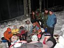 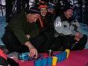 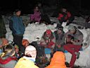 То ли батарейки на фотиках перегрелись, то ли перевелись папарации, то ли у меня не все фоты собраны, в общем - мало фотофактов встречи Праздника Весны и Труда, но зато есть перепись населения! А зачем? Ну, для истории, и так, чтобы знать, с кем катался и жил в те замечательные дни, в том замечательном месте. А то бывает знаком с человеком несколько сезонов, а фамилиё не знаешь :) Дом №1: Васильев Сергей (Доктор Зольбег), Васильев Иван (Баламут), Толмачёв Андрей Дом №2: Ескин Александр, Новиков Дмитрий (Lost), Абдулова Ирина (Ирида) Дом №3: Савченко Андрей, Асламова Женя Дом №4: Хонгодорова Люда, Ловцов Юра (Гил) Дом №5: Чурилов Алексей (волшебный чай)))) (Космонавт), Фадеева Юля (Hewlett) Дом №6: Шультайс Ксения (poZvonoK), Белокрылов Алексей (Слюдянский), Головин Макс Дом №7: Соляник Миша (MIKGT), Ветеорец Олег (Сигал), Хмырова Люба (Любаша) Дом №8: Хромовских Наталья (Таша), Непомнящих Анна (Аnyta), Крапивкина Ольга, Шишкин Константин, Нефедьев Михаил (Майор))))) Дом №9: Александр и Константин ??? Дом №10: Караваев Андрей (Andrews), Панкевич Паша Дом №11: Плюскин Дмитрий, Чернышева Анастасия Дом №12: Мецик Михаил, Попов Евгений Дом №13: Пирог Дмитрий, Дорофеев Александр, Переломов Алексей Дом №14: Дульский Андрей с кем-то :) (племянником)
Окончание здесь - 1 Мая + Клюква
Май 2007 |
"Горожане Жгунска" 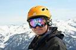 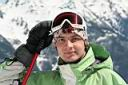 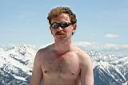 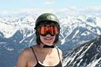 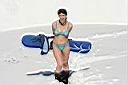 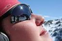 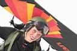 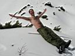 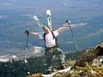 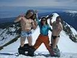 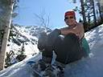 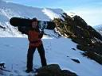 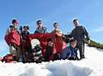
|